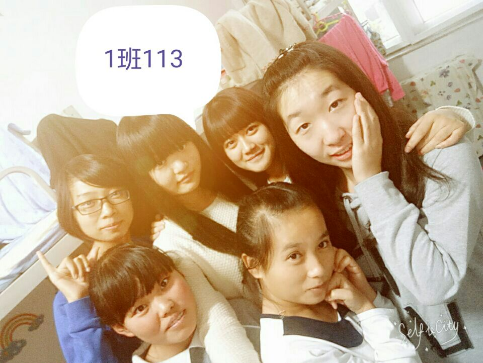
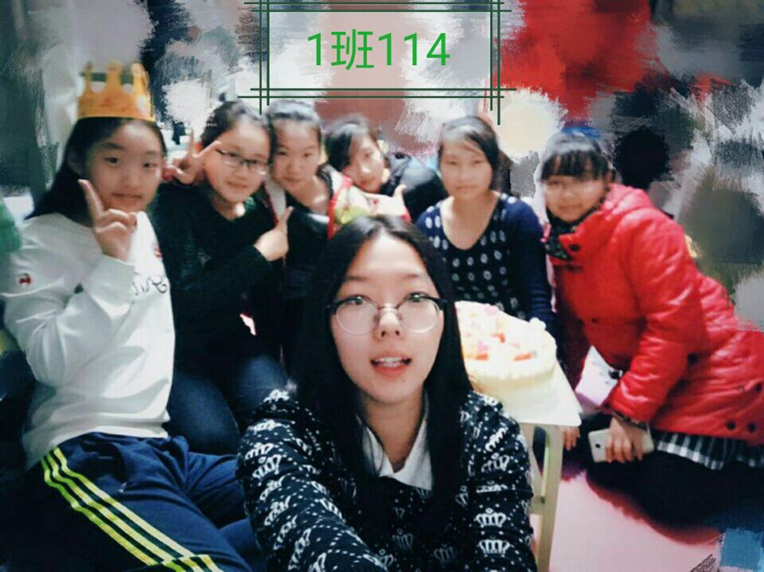
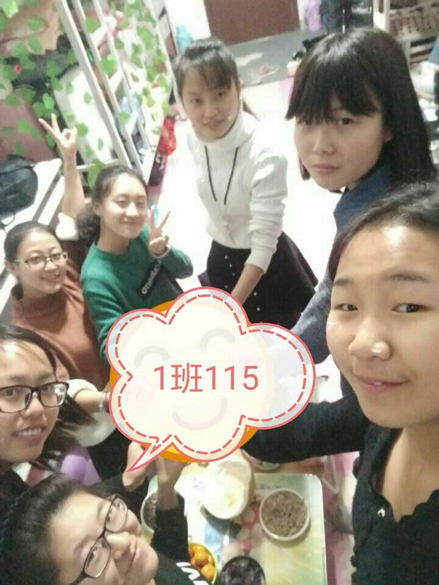
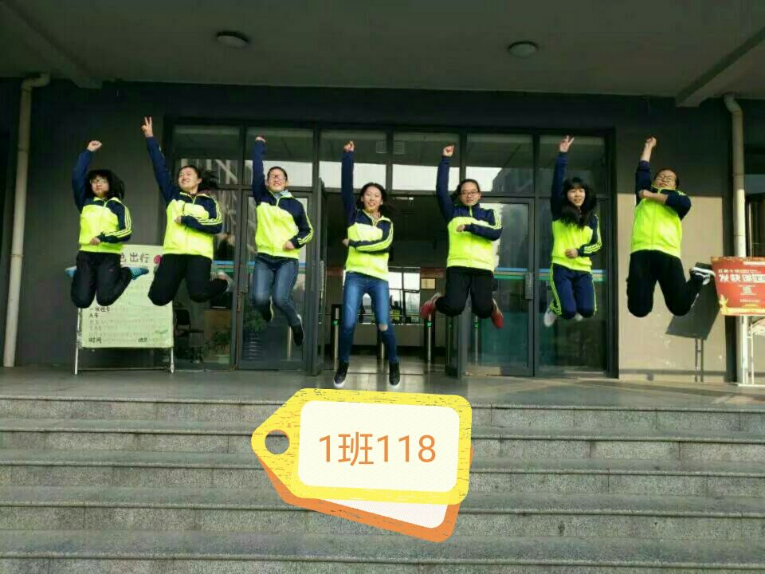
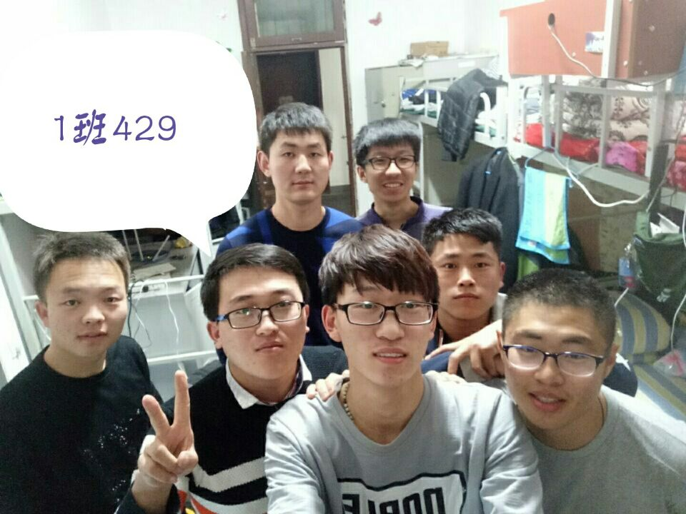
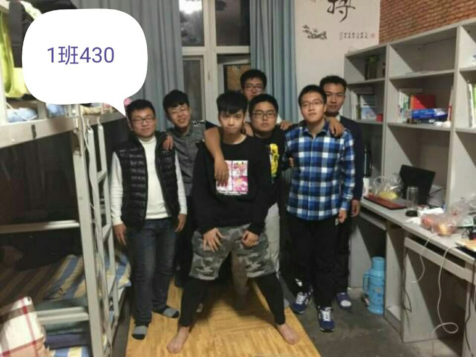
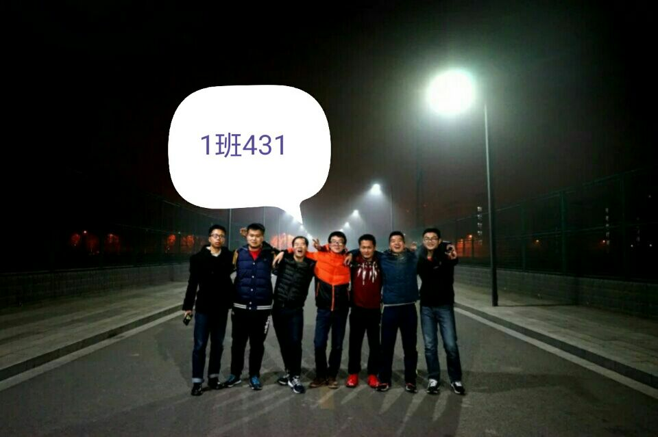
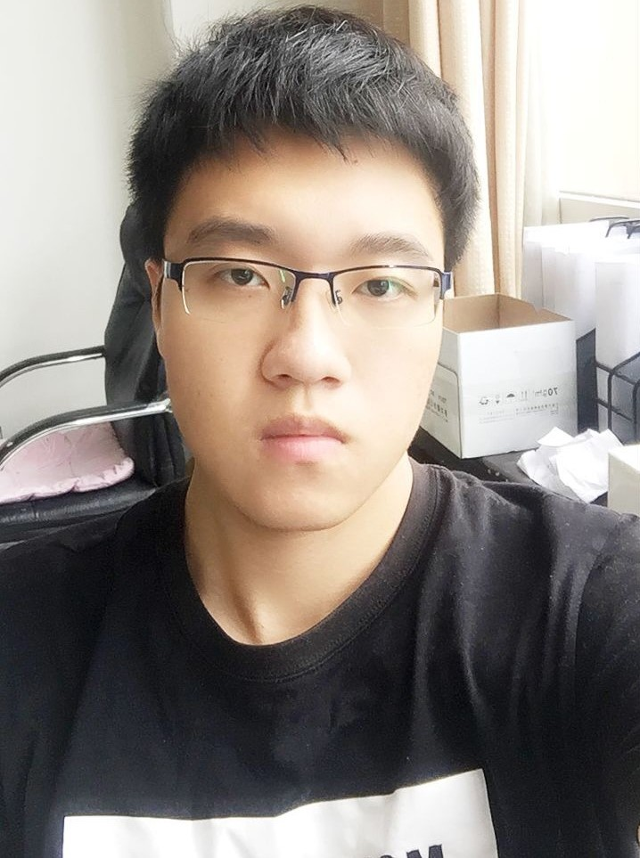

班级成员

启智园6号楼113

启智园6号楼114

启智园6号楼115

启智园6号楼118

诚朴园3号楼429

诚朴园3号楼430

诚朴园3号楼431
诚朴园3号楼432

张家旺
班长
张家旺，男，来自于天津市，软件学院2016级1班班长，担任软件学院学生会生活部干事以及校团委组织部干事.曾获“青年马克思主义培养工程”结业证以及优秀学员，“德艺双馨”优秀志愿者；大学生环保知识竞赛优秀奖。作为团学骨干踏实工作，在各项活动中努力拼搏。在学习上刻苦勤奋，树立良好的榜样，成绩优异。作为班长带领班里同学共同努力朝着未来共同努力。相信在班长的带领下班级将会越走越远。
史素佳
团支书
史素佳,女，来自于河北省张家口市，软件学院2016级1班团支部书记，担任软件学院青年志愿者协会联络部干事以及校团委宣传传媒中心干事。阳光，快乐是她的代名词。在生活中总是面带微笑，很容易相处，给人一种温暖的感觉,非常乐于助人，也总能带给大家快乐。在工作中，认真严谨，曾获得石家庄优秀春运志愿者称号,参加第九期青马培训并获得优秀学员称号,思想积极进取，时光正好，我们会和团书姐姐一起努力，做品学兼优的大学生。